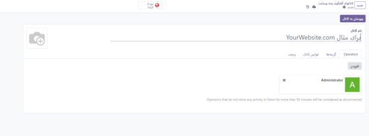
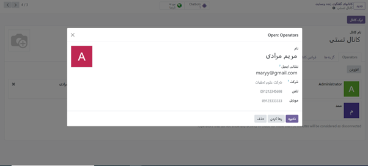
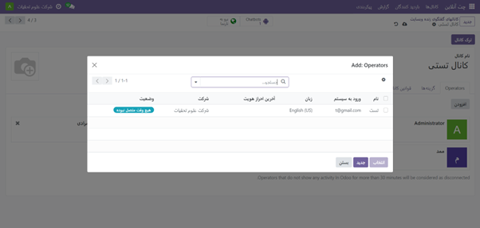
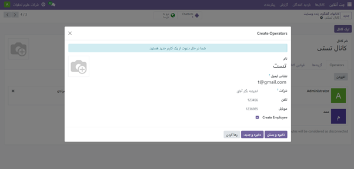
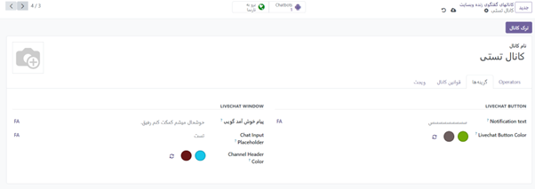
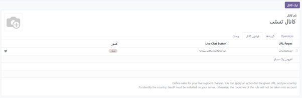
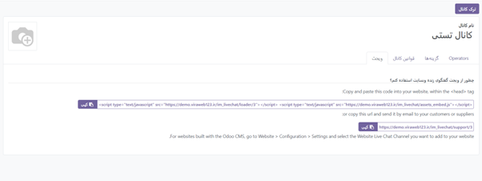

چت آنلاین¶
ماژول چت آنلاین، به کاربران این امکان را میدهد که در زمان واقعی با بازدیدکنندگان وبسایت ارتباط برقرار کنند. این ابزار، به مدیران اجازه میدهد تا به سوالات پشتیبانی سریعاً پاسخ دهند و مسائل را برای بررسی یا پیگیری بیشتر به تیم مربوطه هدایت کنند. در واقع، چت آنلاین فرصتی ارزشمند برای دریافت بازخورد فوری از مشتریان ارائه میدهد.
نحوه فعال کردن چت آنلاین¶
برای فعال کردن چت آنلاین، به سادگی کافی است که به منوی سمت راست بالای صفحه نگاه کنید و بر روی مربع منو کلیک کنید. سپس، به بخش “برنامهها” بروید و ماژول چت آنلاین را پیدا کنید. با کلیک بر روی آن، گزینه “فعال” را انتخاب کنید. (توجه کنید که اگر نیاز به غیرفعال کردن این ماژول داشتید، میتوانید روی سه نقطه سمت چپ که با کادر قرمز مشخص شدهاند کلیک کرده و سپس روی “حذف نصب” کلیک کنید.)

Note
نکته: پس از نصب برنامه چت آنلاین، به طور پیشفرض یک کانال چت آنلاین ایجاد میشود.
برای ایجاد یک کانال چت آنلاین جدید، ابتدا به داشبورد اصلی بروید (در بالای سمت راست). سپس، چت آنلاین را انتخاب کنید و بر روی دکمه “جدید” کلیک نمایید. با این کار، یک فرم جزئیات کانال خالی به شما نمایش داده میشود. در این مرحله، نام مورد نظر برای کانال جدید را در قسمت “نام کانال” وارد نمایید.
Note
نکته: با مراجعه به داشبورد کانالهای چت آنلاین وبسایت، از طریق بردکرامب بالای صفحه، میتوانید به فرم جزئیات کانال برای هر کانالی دسترسی پیدا کنید. کارت کانال مربوطه را پیدا کرده و نشانگر موس را روی آن نگه دارید، سپس روی نماد ⋮ (سه نقطه) کلیک کنید تا منوی کشویی باز شود. سپس، روی “Configure Channel” کلیک کنید تا فرم جزئیات کانال باز شود
برای پیکربندی برگههای باقیمانده در فرم جزئیات کانال (اپراتورها، گزینهها، قوانین کانال و ویجت)، مراحل زیر را دنبال کنید:
تب اپراتورها¶
اپراتورها کاربرانی هستند که به عنوان نماینده عمل میکنند و به درخواستهای چت آنلاین مشتریان پاسخ میدهند. هنگامی که کاربر به عنوان اپراتور در یک کانال چت آنلاین اضافه میشود، میتواند چت را از بازدیدکنندگان وبسایت در هر کجای پایگاه داده دریافت کند و پنجرههای چت در گوشه سمت راست پایین صفحه باز میشود. با توجه به تصویر زیر، در فرم جزئیات کانال، روی تب “Operators” کلیک کنید.
Note
نکته: کاربری که کانال چت آنلاین را ایجاد کرده است به طور پیش فرض به عنوان اپراتور اضافه شده است.

برای افزودن اپراتور جدید، میتوانید از دکمه “افزودن” در بالا سمت راست استفاده کنید. همچنین، اپراتورهای فعلی را میتوانید با کلیک بر روی کادرهای مربوطه آنها در تب “Operators” ویرایش یا حذف کنید، مانند عکس زیر.
در حالت جستجو، برای یافتن کاربران مورد نظر، میتوانید اسکرول کنید یا نام آنها را در نوار جستجو وارد کنید. سپس، بر روی کادر کنار کاربرانی که قرار است اضافه شوند، کلیک کرده و روی “Select” کلیک کنید.
همچنین، اپراتورهای جدید را میتوانید مستقیماً با استفاده از مدال افزودن و به لیست اضافه کنید.
همچنین با کلیک بر روی جدید و پر کردن فرم ایجاد اپراتورها میتوان اپراتور جدید اضافه کرد.
تب “Options” یا گزینهها در فرم جزئیات کانال چت آنلاین، شامل تنظیمات تصویری و متنی برای پنجره چت آنلاین است.
دکمه LiveChat Button نمادی است که در گوشه پایین وب سایت ظاهر می شود. در قسمت “notification text” متنی را وارد کنید که هنگامی که دکمه چت آنلاین در وبسایت ظاهر میشود، تبریکی را نمایش دهد و حباب متن را بهروز کند. برای تغییر رنگ دکمه چت آنلاین که در وبسایت ظاهر میشود، از قسمت رنگ استفاده کنید. ابتدا روی دایره رنگی کلیک کنید تا پنجره انتخاب رنگ باز شود، سپس دایره را در امتداد شیب رنگ بکشید تا رنگ مورد نظر را انتخاب کنید. پس از تکمیل، بر روی پنجره انتخاب کلیک کنید تا تغییرات ذخیره شود. برای بازنشانی رنگ به حالت پیشفرض، روی نماد 🔁 (رفرش) در سمت راست حبابهای رنگی کلیک کنید.
Note
به منظور انتخاب رنگ برای دکمه یا هدر، میتوانید از یکی از روشهای زیر استفاده کنید:
استفاده از نوار لغزنده: با استفاده از نوار لغزنده، میتوانید رنگ مورد نظر را به صورت دستی انتخاب کنید. با کشیدن نوار به سمت رنگ مورد نظر، رنگ تغییر مییابد.
ورودی کد رنگ: میتوانید کد رنگ RGB، HSL، یا HEX مورد نظر را به صورت دستی وارد کنید تا رنگ مطلوب را انتخاب کنید.
3. استفاده از حبابهای رنگی: با کلیک روی هر یک از حبابهای رنگی در پنجره انتخاب رنگ پاپآپ، میتوانید رنگ مورد نظر خود را انتخاب کنید. این حبابها معمولاً به صورت نمونهای از رنگهای مختلف نمایش داده میشوند. توجه داشته باشید که گزینههای مختلفی برای انتخاب رنگ ممکن است بسته به سیستم عامل شما در دسترس باشد.
Livechat online¶
پنجره چت آنلاین فضایی است که در آن گفتگوی چت آنلاین با بازدیدکنندگان وب سایت انجام می شود. برای تغییر پیامی که بازدیدکننده هنگام باز کردن یک جلسه گپ جدید میبیند، پیام خوشآمدگویی را ویرایش کنید. این پیام باید به نظر برسد که توسط یک اپراتور چت آنلاین ارسال شده است، و به عنوان یک تبریک و یک دعوت برای ادامه مکالمه عمل کند. برای تغییر متنی که در کادری که بازدیدکنندگان پاسخهای خود را تایپ میکنند ظاهر میشود، “Chat Input Placeholder” را ویرایش کنید. این پیام از بازدیدکننده میخواهد که چت را آغاز کند. سربرگ کانال نوار رنگی در بالای پنجره چت قرار دارد. میتوانید رنگ هدر کانال را با استفاده از همان مراحلی که برای تغییر دکمه چت آنلاین انجام دادید، تغییر دهید.
برگه قوانین کانال¶
برگه “قوانین کانال” در فرم جزئیات کانال چت آنلاین، با پیکربندی زمانی که یک اقدام “URL Regex” فعال میشود مانند بازدید از صفحه، تعیین میکند که چه زمانی پنجره چت آنلاین در وبسایت باز میشود.
برای ایجاد یک قانون کانال جدید، روی افزودن یک سطر کلیک کنید. با این کار حالت Create Rules باز می شود.

قوانین جدید ایجاد کنید¶
مطابق دستورالعمل زیر، فیلدها را در مودال ایجاد قوانین پر کنید. سپس روی ذخیره و بستن کلیک کنید.
دکمه چت آنلاین¶
دکمه چت آنلاین نمادی است که در گوشه پایین وب سایت ظاهر میشود. یکی از گزینههای نمایش زیر را انتخاب کنید: - نمایش: دکمه چت را در صفحه نمایش میدهد. - نمایش با اعلان: دکمه چت و همچنین یک حباب متنی شناور را در کنار دکمه نمایش میدهد. - باز کردن خودکار: دکمه را نمایش میدهد و بعد از مدت زمان مشخصی پنجره چت را به طور خودکار باز میکند (مشخص شده در قسمت باز کردن خودکار تایمر، که با انتخاب این گزینه آشکار میشود). - پنهان کردن: دکمه چت را در صفحه پنهان میکند.
چت بات¶
برای قرار دادن یک چت بات در این کانال، آن را از منوی کشویی انتخاب کنید. اگر میخواهید ربات چت فقط زمانی فعال شود که هیچ اپراتوری فعال نباشد، کادر با برچسب “Enabled only” را علامت بزنید.
URL Regex¶
URL Regex صفحات وبی را مشخص می کند که این قانون باید در آنها اعمال شود. در قسمت URL Regex، URL نسبی صفحه ای را که باید دکمه چت در آن ظاهر شود، وارد کنید. باز کردن خودکار تایمر: این بخش مدت زمانی (بر حسب ثانیه) را مشخص میکند که یک صفحه باید قبل از باز شدن پنجره چت باز شود. این فیلد فقط ظاهر میشود اگر دکمه چت آنلاین برای این قانون روی باز کردن خودکار تنظیم شده باشد.
کشور: اگر این کانال باید فقط برای بازدیدکنندگان سایت در کشورهای خاص در دسترس باشد، آنها را به قسمت کشور اضافه کنید. اگر این قسمت خالی بماند، کانال بدون در نظر گرفتن موقعیت مکانی در دسترس همه بازدیدکنندگان سایت قرار میگیرد.
برای ردیابی موقعیت جغرافیایی بازدیدکنندگان، GeoIP باید بر روی پایگاه داده نصب شود. در حالی که این ویژگی به طور پیشفرض در پایگاه دادههای Odoo Online نصب شده است، پایگاههای داده On-Premise به مراحل راهاندازی اضافی نیاز دارند.
تب ویجت¶
برگه ویجت در فرم جزئیات کانال چت آنلاین کد یک ویجت وب سایت را ارائه میدهد. این کد را میتوان به یک وب سایت اضافه کرد تا دسترسی به پنجره چت آنلاین را فراهم کند.
تگ ها¶
#چت آنلاین
#پشتیبانی چت
#پلتفرم چت
#سرویس چت
#نرمافزار چت
#ابزار چت
#ابزار گفتگو
#پیام رسانی فوری
#چت وب برای پشتیبانی مشتریان
#پشتیبانی چت وبسایت
#چت اودو
#پلتفرم چت اودو
#Online Chat
#Online Chat Odoo
#Live Chat
#Live Chat Odoo
#Chat Support
#Chat Online
#Chat Service
#Chat Software
#Chat Widget
#Chat Tool
#Real Time Chat
#Chat Messaging App
#Website Chat Support
#Chat With Friends Online
#Start Chatting Now
#Free Online Chat
#Online Chat Rooms
#Online Chat Bot
#Live Online Chat